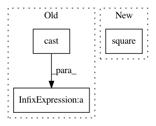

66de7491bd7e16a072e2d1302df1f88c277dae2e,adding_problem_100/rwa_model/train.py,,,#,25
Before Change
// Evaluate performance
//
correct = tf.equal(tf.round(py), tf.round(y))
accuracy = 100.0*tf.reduce_mean(tf.cast(correct, tf.float32))
////////////////////////////////////////////////////////////////////////////////////////////////////////////////////////////////////////////////////////////////////////////////////
// Train
////////////////////////////////////////////////////////////////////////////////////////////////////////////////////////////////////////////////////////////////////////////////////
// Operation to initialize session
//
initializer = tf.global_variables_initializer()
// Open session
//
with tf.Session() as session:
// Initialize variables
//
session.run(initializer)
// Each training session represents one batch
//
for iteration in range(num_iterations):
// Grab a batch of training data
//
xs, ls, ys = dp.train.batch(batch_size)
feed = {x: xs, l: ls, y: ys}
// Update parameters
//
out = session.run((cost, accuracy, optimizer), feed_dict=feed)
print("Iteration:", iteration, "Dataset:", "train", "Cost:", out[0]/np.log(2.0), "Accuracy:", out[1])
// Periodically run model on test data
//
After Change
// Cost function and optimizer
//
cost = tf.reduce_mean(tf.square(ly_flat-y))
optimizer = tf.train.AdamOptimizer(learning_rate).minimize(cost)
////////////////////////////////////////////////////////////////////////////////////////////////////////////////////////////////////////////////////////////////////////////////////
In pattern: SUPERPATTERN
Frequency: 3
Non-data size: 3
Instances
Project Name: jostmey/rwa
Commit Name: 66de7491bd7e16a072e2d1302df1f88c277dae2e
Time: 2017-04-04
Author: jostmey@gmail.com
File Name: adding_problem_100/rwa_model/train.py
Class Name:
Method Name:
Project Name: galeone/dynamic-training-bench
Commit Name: e123d531b5ae9fda0846a34c4800d47ecfe5fd2b
Time: 2016-12-12
Author: nessuno@nerdz.eu
File Name: models/SingleLayerCAE.py
Class Name: SingleLayerCAE
Method Name: loss
Project Name: kundajelab/dragonn
Commit Name: 6ca849c6c7fc3ce9f725813fb9b130ed53e4e362
Time: 2019-07-04
Author: annashcherbina@gmail.com
File Name: dragonn/custom_losses.py
Class Name:
Method Name: ambig_mean_squared_error